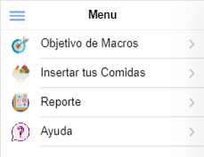
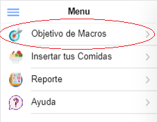
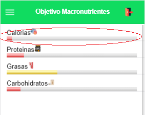
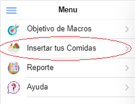
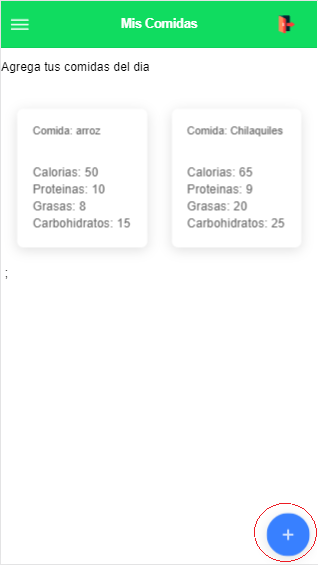
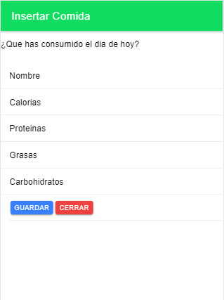
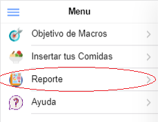
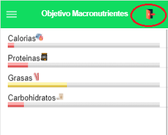

Este es el menu principal de la aplicación
Este apartado muestra el progreso que se lleva segun los Macronutrientes recomendados
Se muestra graficamente por medio de barras que se van llenando conforme se inserten comidas
Este apartado es donde se muestran las comidas que se han ingerido en el dia
Para insertar una comida se toca el siguiente boton azul
Aqui se escriben los datos de la comida que se desea agregar
En este apartado se genera un reporte de tu informacion, recomendacion y los Macronutrientes que has consumido
Para cerrar sesion solo se da click el icono de puerta
